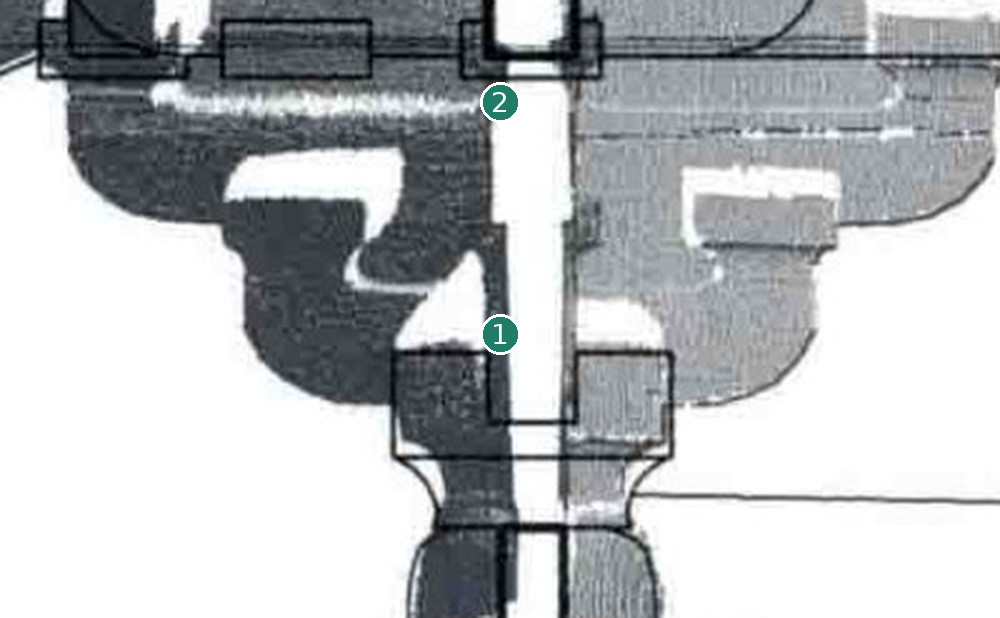
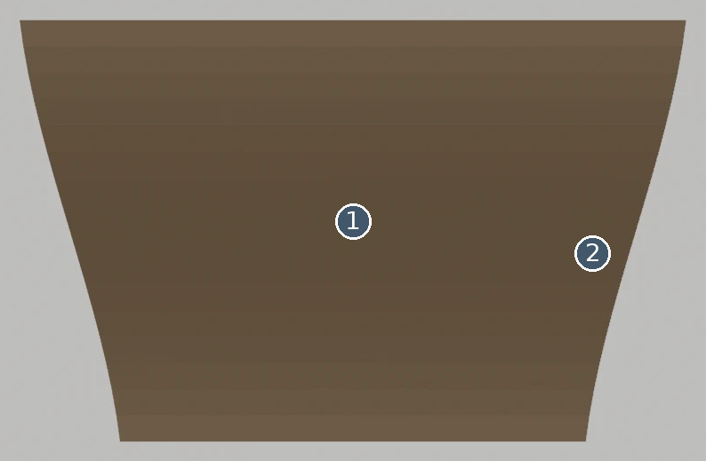
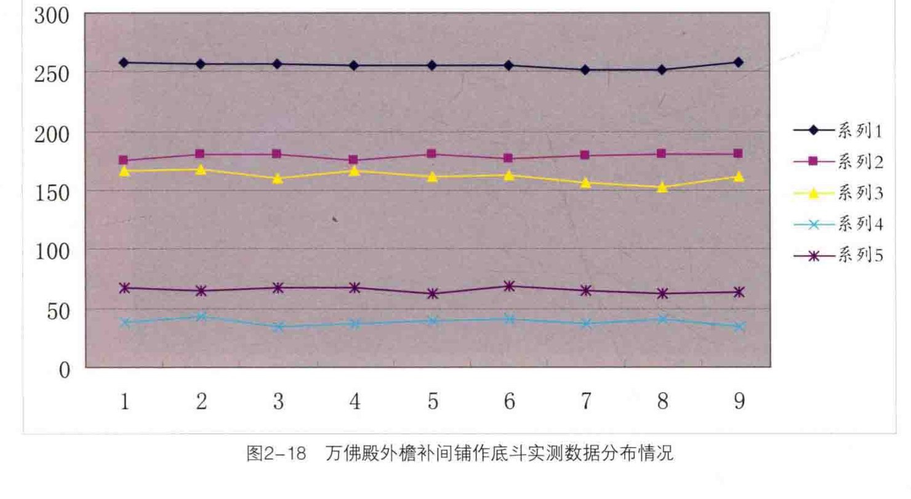
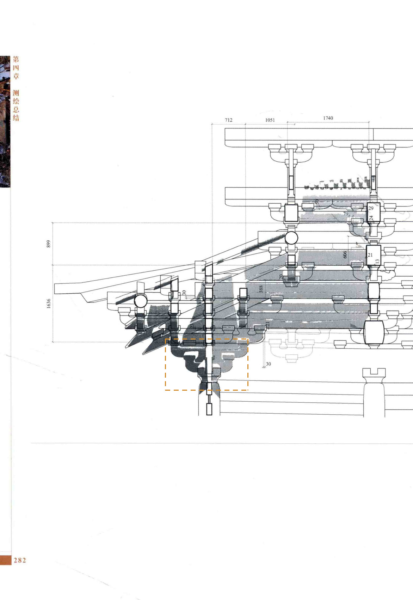

Master已有分段收分轮廓
先看形，再看差异


完整开口及背面无法核定
定性对照：两侧未做比例归一或像素叠加。橙色虚框只表示原图查找范围。
02 / 形态细节
其他角度、截面与现有局部版本




03 / 原图与位置
目标在原始资料的哪里


安装位置与复用
南立面西次间；南立面明间；南立面东次间；北立面西次间；北立面明间；北立面东次间；东山北次间；东山明间；东山南次间；西山北次间；西山明间；西山南次间
变体：沿用现行登记口径
Master：CMP-DOU-BOTTOM-LONGKAI-001_MASTER
对应实例范围（12条登记记录，不是物理件数）
- 底斗-南立面-西次间 · 南立面西次间
- 底斗-南立面-明间 · 南立面明间
- 底斗-南立面-东次间 · 南立面东次间
- 底斗-北立面-西次间 · 北立面西次间
- 底斗-北立面-明间 · 北立面明间
- 底斗-北立面-东次间 · 北立面东次间
- 底斗-东山-北次间 · 东山北次间
- 底斗-东山-明间 · 东山明间
- 底斗-东山-南次间 · 东山南次间
- 底斗-西山-北次间 · 西山北次间
- 底斗-西山-明间 · 西山明间
- 底斗-西山-南次间 · 西山南次间
04 / 证据与边界
出处、模型身份与未知部分
仍然未知：该剖面只能检查投影可见轮廓。
原工程记录（按原文保留）：有分段轮廓的现有模型比单纯长方体更具体；槽口与隐藏连接仍缺直接证明，完整实物外形只部分符合。

模型原始渲染、网格身份与批准范围
现有 BLEND · axon 云端只读渲染；原始二进制与网格/变换未改。
现有 BLEND · front 云端只读渲染；原始二进制与网格/变换未改。

现有 BLEND · side 云端只读渲染；原始二进制与网格/变换未改。
A1、A2、A3共享测绘数据脉络，不作为三次独立复测。官方展示只作形态参考；推断、遮挡与未知不升级为实测事实。